Las Figuras
| Figura | Nombre | Duración |
|---|---|---|
| 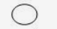 | Redonda | 4 tiempos |
| 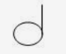 | Blanca | 2 tiempos |
| 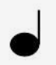 | Negra | 1 tiempo |
| 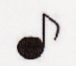 | Corchea | 1/2 tiempo |
| 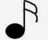 | Semicorchea | 1/4 tiempo |
| 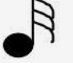 | Fusa | 1/8 tiempo |
| 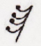 | Semifusa | 1/16 tiempo |
Silencios
| Símbolo | Nombre | Duración |
|---|---|---|
| 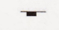 | Silencio de Redonda | 4 tiempos |
| 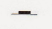 | Silencio de Blanca | 2 tiempos |
| 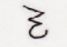 | Silencio de Negra | 1 tiempo |
| 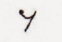 | Silencio de Corchea | 1/2 tiempo |
| 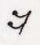 | Silencio de Semicorchea | 1/4 tiempo |
| 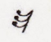 | Sikencio de Fusa | 1/8 tiempo |
| Silencio de Semifusa | 1/16 tiempo |
Puntillo
| Definición | Imagen |
|---|---|
| El puntillo,como su nombre lo dice,es un pequeño punto que se agrega al lado de una figura para que su a valor se le agregue la mitad de lo que vale la figura,por ejemplo una negra vale 1 tiempo y una negra con puntillo vale 1 tiempo y medio. | 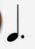 |